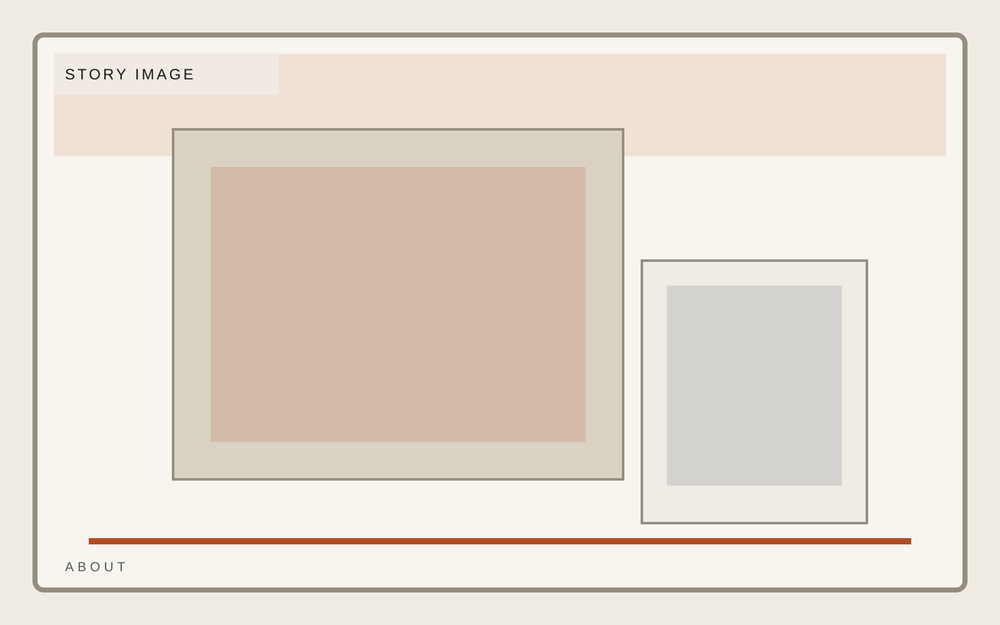
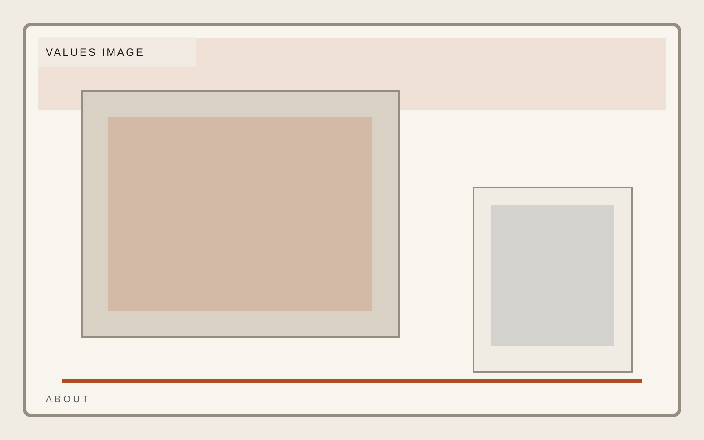
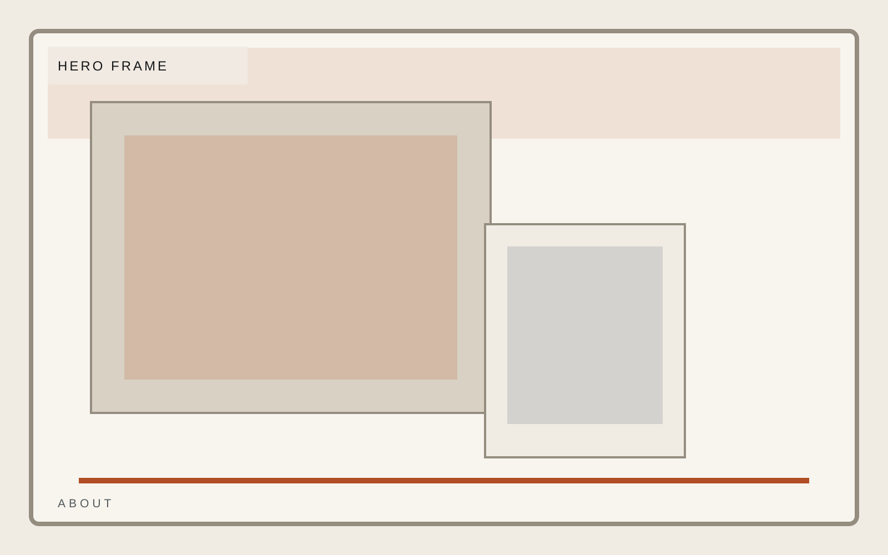

Industrial operations
Story
The company story should be anchored in craft and uptime, not in founder mythology.
Response logic
Technical standards
Field accountability


Industrial operations
Field response, equipment support, and facility-grade execution for operators who care more about standards than slogans. The story only works when it feels grounded in execution.

Industrial operations
The company story should be anchored in craft and uptime, not in founder mythology.


Industrial operations
Vector Field frames values as proof of operating readiness, with clear standards, measured copy, and no cosplay ruggedness. This about page stays consistent with the template system while giving this section its own visual weight.
Industrial operations
Standards should feel procedural, measurable, and visual enough to survive screenshot review.